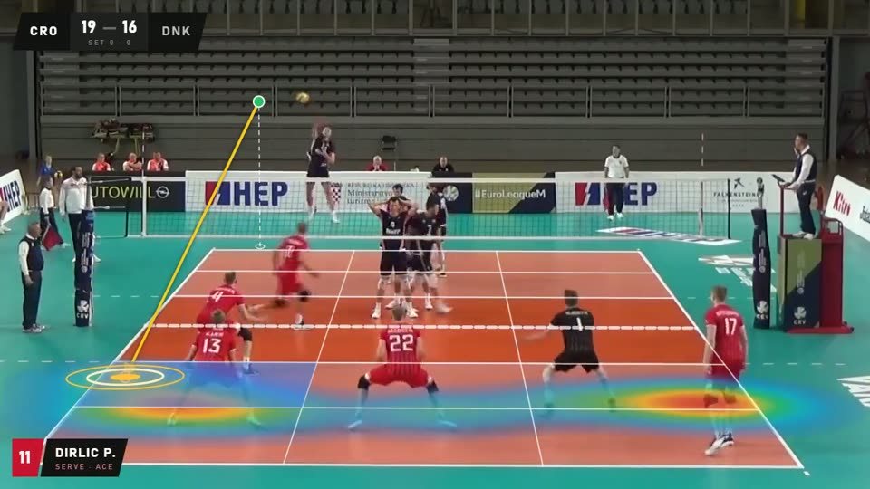

An ace, drawn where it landed
The serve's flight from the hit point to the landing point, a ripple that starts 1.5 seconds before it comes down, the heat of the player's other serves, and the zone it landed in painted in a colour of your choice.


 Scoreboard
Scoreboard On the court
On the court Timing
Timing


 Load
Load Find
Find Build
Build Show
Show


 Compare videos
Compare videos A library for every match
A library for every match Bulk import
Bulk import Player photo packs
Player photo packs Play through
Play through English and Japanese
English and Japanese